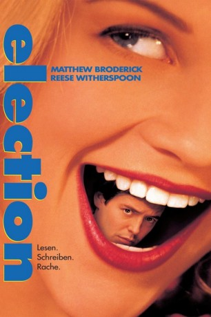
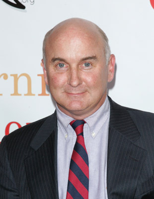

#7840 Election
Auszeichnungen: für 1 Oscars nominiert
 
 IMDB-Wertung: 7.3 / 10
IMDB-Wertung: 7.3 / 10  Tomatometer: 92
Tomatometer: 92  Metascore: 0
Metascore: 0 
Tracy Flick hat sich das Amt der Schulsprecherin in den Kopf gesetzt. Angesichts ihrer aufgesetzten Tugendhaftigkeit bekommt der beliebte Lehrer Mr. McAllister das kalte Grausen und mobilisiert den gutmütigen Football-Jock Paul als Gegenkandidat. Es beginnt eine heiße Wahlkampagne, bei der McAllister in ein tiefes Fettnäpfchen tritt.
Jahr: 1999
Dauer: 103 Minuten
FSK: 12
Land: USA Studio: Paramount PicturesTonspuren: DD5.1 - ,
Untertitel:
Auflösung: 1080p (1920x816) Größe: 9512 MB
Genre: Drama, Komödie, Liebe
Regisseur:  Alexander Payne
Alexander Payne
Drehbuch: Tom Perrotta
Soundtrack: Rolfe Kent
Darsteller:
- Matthew Broderick als Jim McAllister
 Reese Witherspoon als Tracy Flick
Reese Witherspoon als Tracy Flick Chris Klein als Paul Metzler
Chris Klein als Paul Metzler- Jessica Campbell als Tammy Metzler
- Mark Harelik als Dave Novotny
- Phil Reeves als Walt Hendricks
 Molly Hagan als Diane McAllister
Molly Hagan als Diane McAllister Colleen Camp als Judith R. Flick
Colleen Camp als Judith R. Flick- Frankie Ingrassia als Lisa Flanagan
-  Matt Malloy als Vice-Principal Ron Bell
 Jeanine Jackson als Jo Metzler
Jeanine Jackson als Jo Metzler Holmes Osborne als Dick Metzler
Holmes Osborne als Dick Metzler- David Wenzel als Eric
- Nicholas D'Agosto als Larry Fouch
- Jillian Crane als Jillian
- John Ponzio als Georgetown Student (uncredited)
- Rohan Quine als Village Guy (uncredited)
- Delaney Driscoll als Linda Novotny
- Loren Nelson als Custodian
- Emily Martin als Girl in Crisis
- Jonathan Marion als Derek - Classroom Student
- Amy Falcone als Michelle - Classroom Student
- Matt Justesen als 'Eat Me' Boy
- Nick Kenny als 'Eat Me' Boy's Buddy
- B.J. Tobin als Adult Video Actor
- Christa Young als Adult Video Actress
- Joel Parks als Jerry Slavin
- Larry Kaiser als Chemistry Teacher
- Marilyn Tipp als Carver Office Lady
- Jeannie Brayman als Faculty Ballot-Giver
- James Devney als Motel Clerk
- L. Carmen Novoa als Spanish Teacher
- Jason Paige als Kid in Georgetown Hall
- Matt Golden als Kid in Georgetown Hall
- Heather Koenig als Kid in Georgetown Hall
- Rob Kunkel als Bob the Mechanic (uncredited)
- Joseph William Simmons als Boy Tapping Pencil in Classroom (uncredited)
- Sarah Talcott als Student (uncredited)
Datei: X:\1999\Election (1999, FSK12, 1920x816).mkv seit 25.12.2017
Festplatte: HD 1996-2002
 Es gibt insgesamt 81 Filme in der Gruppe '1999'
Es gibt insgesamt 81 Filme in der Gruppe '1999'